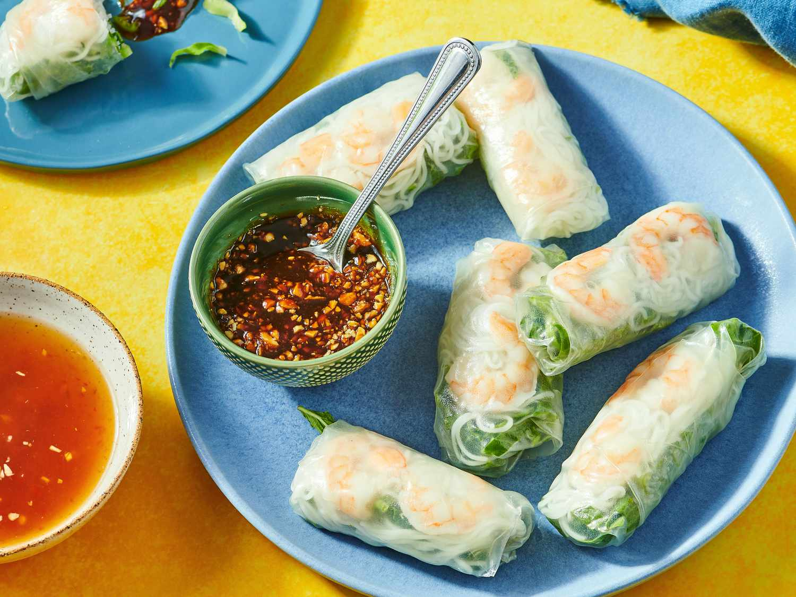

Vietnamese Spring Rolls
Home

Fresh Vietnamese spring rolls are translucent rice paper parcels filled with shrimp, crisp vegetables, vermicelli noodles, and fragrant herbs. They are served chilled with a tangy peanut dipping sauce for a light and refreshing bite.
Ingredients
- Rice paper wrappers
- Cooked shrimp
- Rice vermicelli noodles
- Fresh herbs (mint, cilantro, Thai basil)
- Crisp vegetables (carrot, cucumber, lettuce)
Steps
- Prepare the ingredients - Cook vermicelli noodles, slice vegetables into thin strips, and halve the shrimp lengthwise.
- Soften the rice paper - Dip each rice paper wrapper briefly in warm water until pliable but not too soft.
- Arrange the filling - Place shrimp, noodles, herbs, and vegetables neatly in the center of the softened wrapper.
- Roll tightly - Fold the sides inward, then roll from the bottom up, keeping the roll tight and compact.
- Serve with dipping sauce - Arrange spring rolls on a plate and serve with hoisin-peanut sauce or nuoc cham (fish sauce dip).